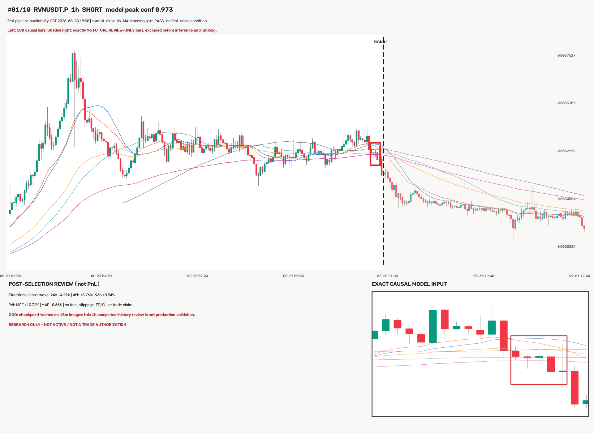
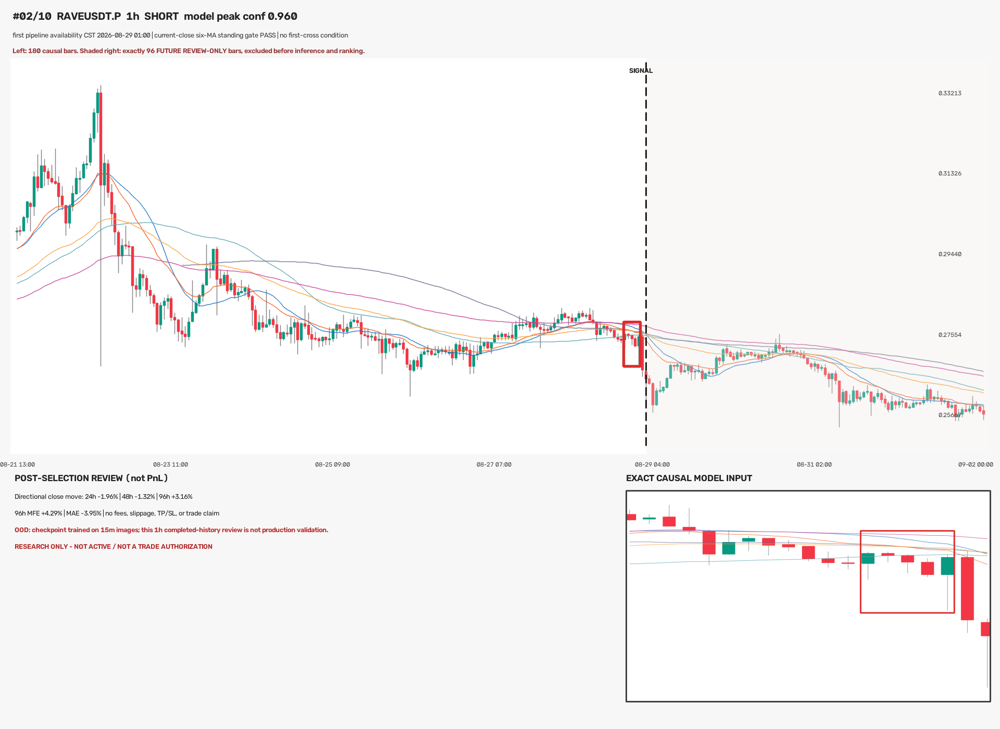
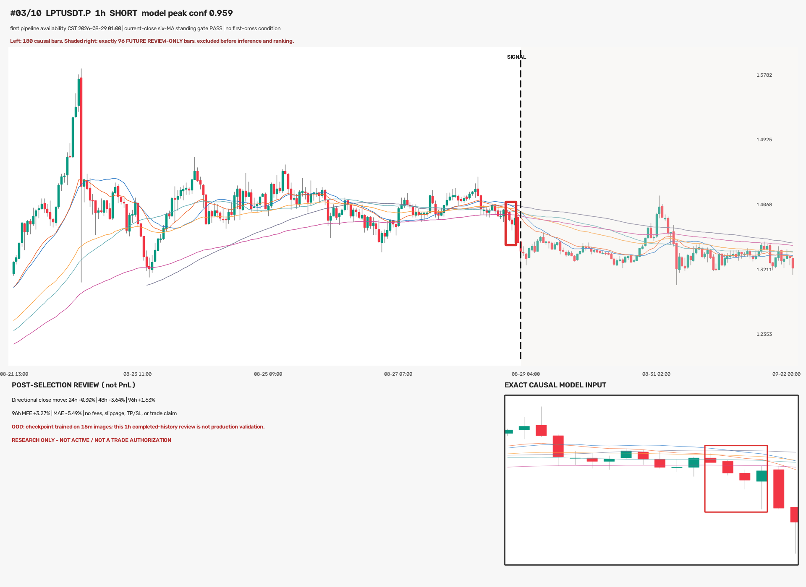
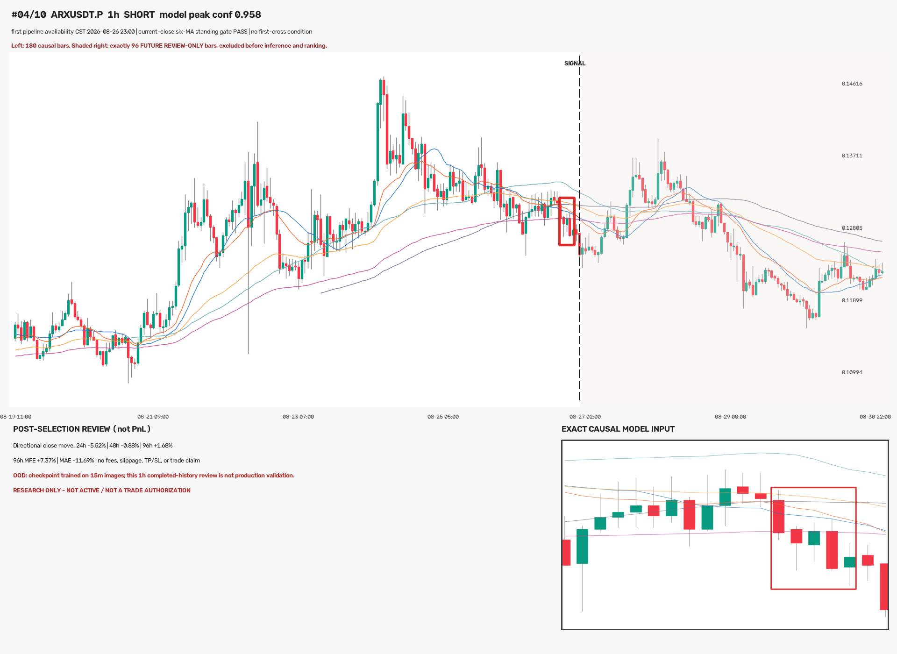
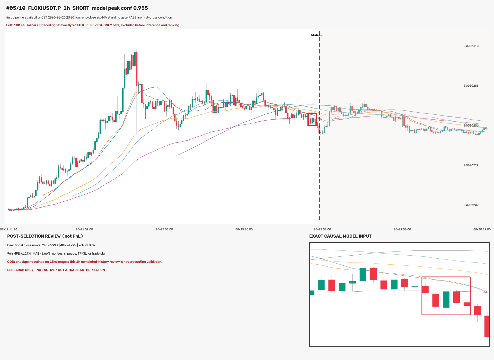
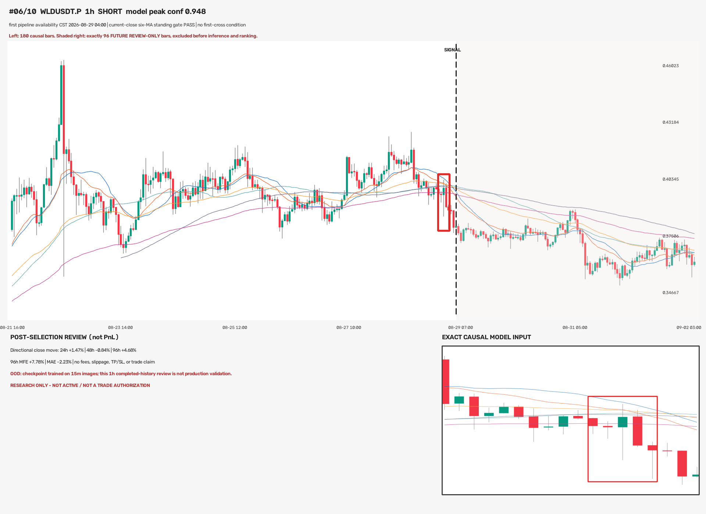
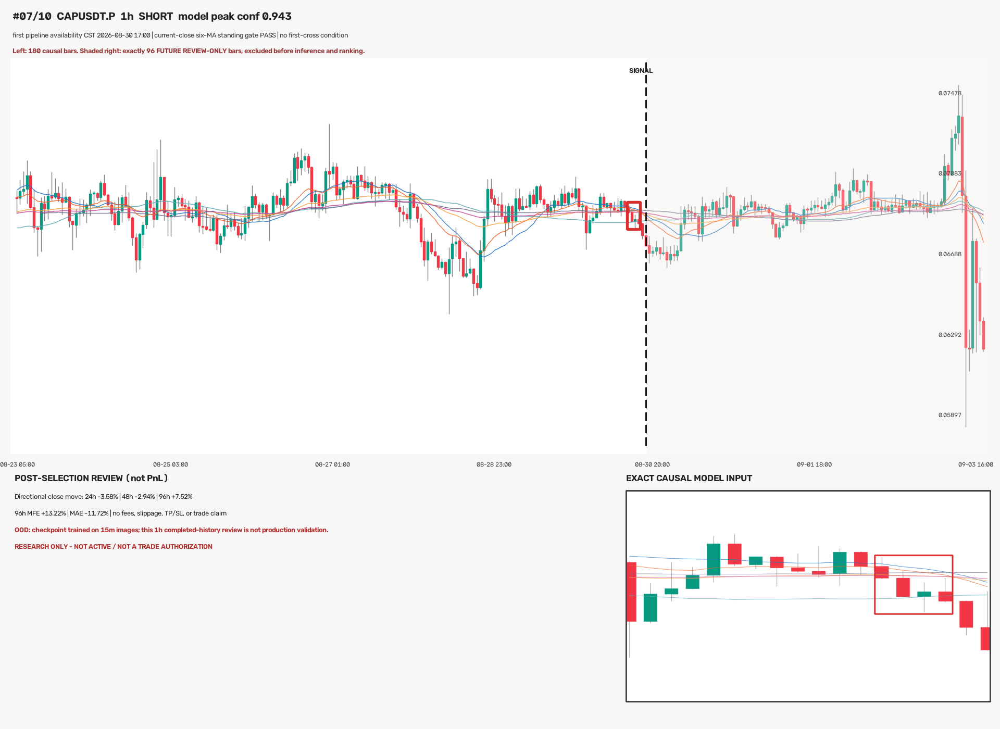
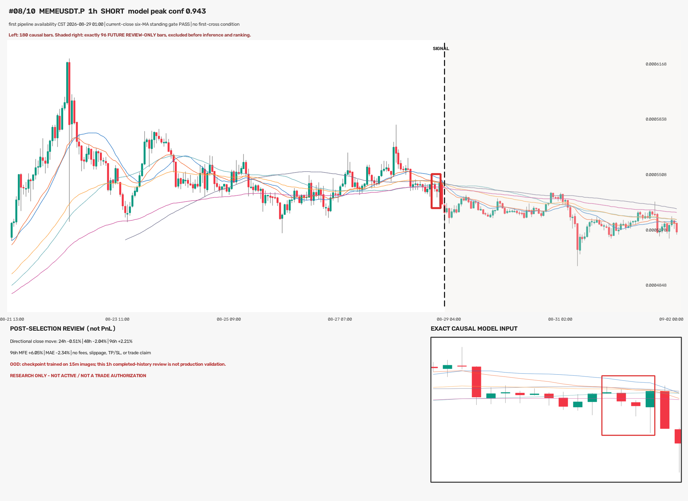
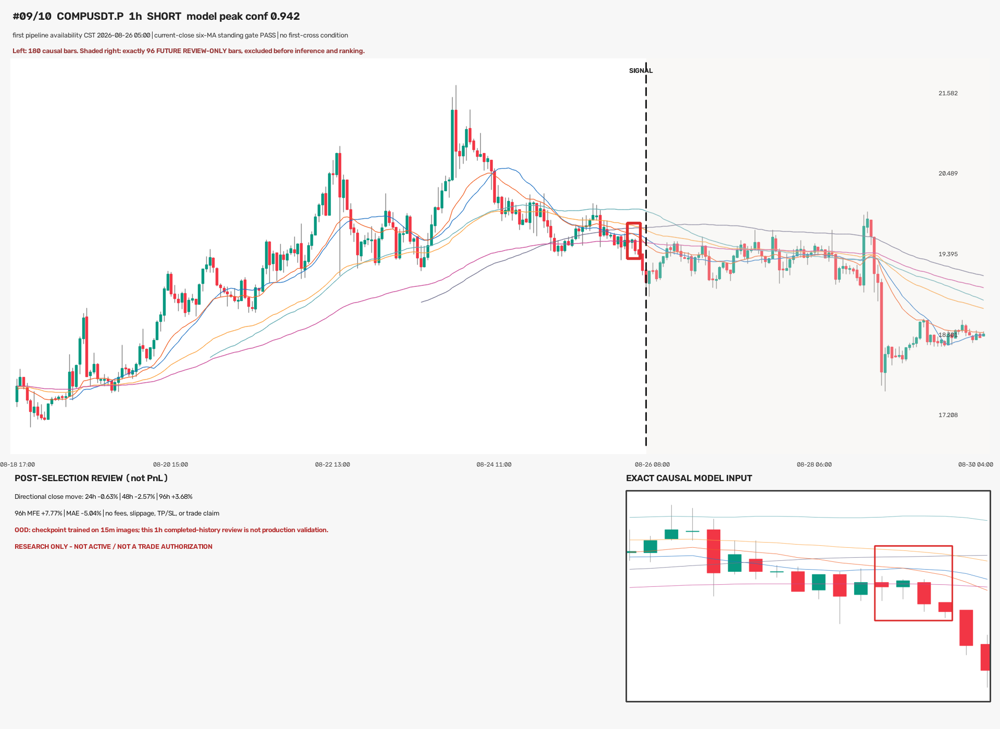
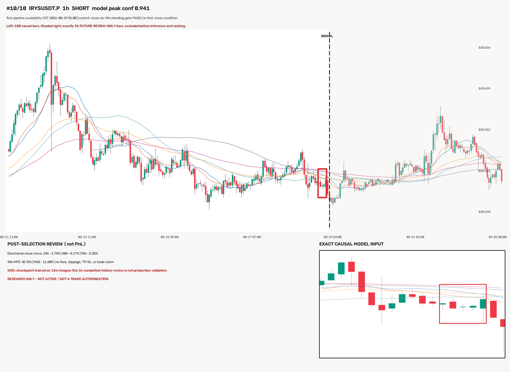

#01 RVNUSDT.P · SHORT · 2026-08-28 18:00 CST · conf 0.973
96h directional move +8.54%（只作事后审核，未参与选择；不等于实际盈亏）。

不是旧候选复用：本页来自本轮重新下载的全市场原始 K 线与重新推理。每图左侧 180 根历史；虚线右侧 96 根未来 K 线只用于人工审核，选 Top-10 前已从推理帧物理删除。
排序只用模型事件峰值置信度、信号时间与稳定字典序；没有用未来涨跌。模型原生训练周期为 15m，因此这些 1h 图只属于 OOD 研究样本。
96h directional move +8.54%（只作事后审核，未参与选择；不等于实际盈亏）。

96h directional move +3.16%（只作事后审核，未参与选择；不等于实际盈亏）。

96h directional move +1.63%（只作事后审核，未参与选择；不等于实际盈亏）。

96h directional move +1.68%（只作事后审核，未参与选择；不等于实际盈亏）。

96h directional move -1.03%（只作事后审核，未参与选择；不等于实际盈亏）。

96h directional move +4.68%（只作事后审核，未参与选择；不等于实际盈亏）。

96h directional move +7.52%（只作事后审核，未参与选择；不等于实际盈亏）。

96h directional move +2.21%（只作事后审核，未参与选择；不等于实际盈亏）。

96h directional move +3.68%（只作事后审核，未参与选择；不等于实际盈亏）。

96h directional move -2.35%（只作事后审核，未参与选择；不等于实际盈亏）。
